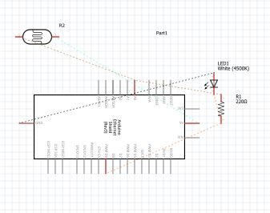
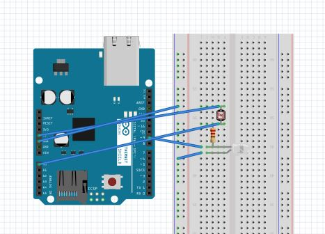
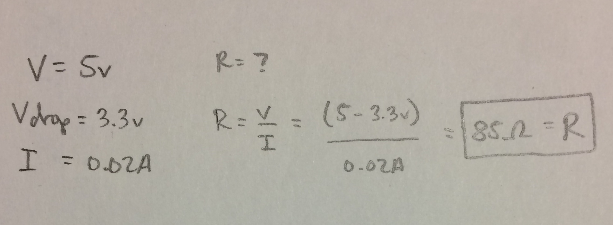
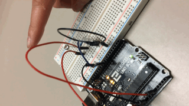
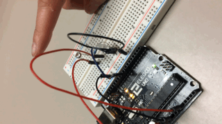

Assignment 3: Input/ Output
Schematic
   I used a photoresistor and a 220 ohm resistor for the LED because according to my calculations the resistance needed to be greater than 85 ohms. Otherwise, the circuit would short.GIF and Pictures
 
In this circuit the photoresistor funtions as an input and the LED serves as an output. The photoresistor is controlled by pin A0 and the LED is controlled by pin 9.
A 5 volt arduino powers this circuit. If the photoresistor senses a value greater than 700 then the LED will turn off and if the value is greater then the LED will
light up with a value of 220.

In this circuit the photoresistor funtions as an input and the LED serves as an output. The photoresistor is controlled by pin A0 and the LED is controlled by pin 9.
A 5 volt arduino powers this circuit. If the photoresistor senses a value greater than 700 then the LED will turn off and if the value is greater then the LED will
light up with a value of 220.